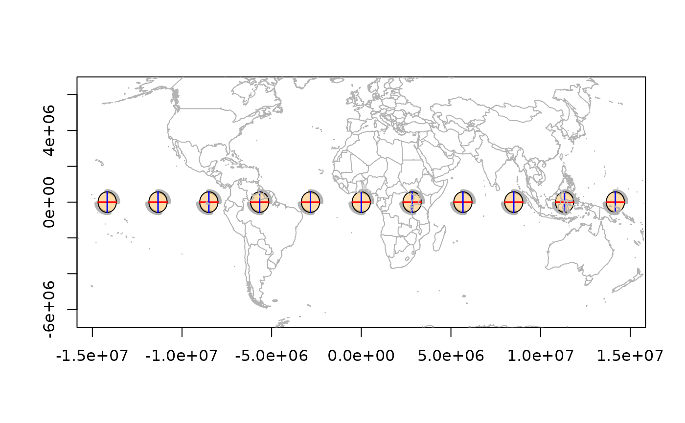

tissot_map() draws the bundled world coastline, projected if a
projection is current. The projection is determined in this order:
An explicit
targetargumentThe projection recorded by the most recent call to
plot.indicatrix_list(),image.tissot_raster(), ortissot_raster()
Usage
tissot_map(..., target = NULL, add = TRUE)
tissot_abline(x, y = NULL, ..., source = "EPSG:4326", target = NULL)Arguments
- ...
graphical parameters passed to
graphics::lines()(if adding) orgraphics::plot()(if creating new)- target
target CRS. If
NULL, uses the last plot projection (fromplot.indicatrix_list()) or draws in lon/lat.- add
logical; add to existing plot (default
TRUE) or create new- x
longitude values (or any xy-ish input; see
tissot())- y
latitude values (ignored if
xis a matrix)- source
source CRS for the coordinates (default
"EPSG:4326")
Value
tissot_map() invisibly returns the (projected) world coastline matrix
tissot_abline() is called for its side effect
Details
tissot_abline() draws vertical and horizontal reference lines at a
given longitude/latitude in projected coordinates.
Examples
r <- tissot(cbind(seq(-150, 150, by = 30), 0), "+proj=robin")
ii <- indicatrix(r)
plot(ii, scale = 6e5, add = FALSE)
tissot_map()
